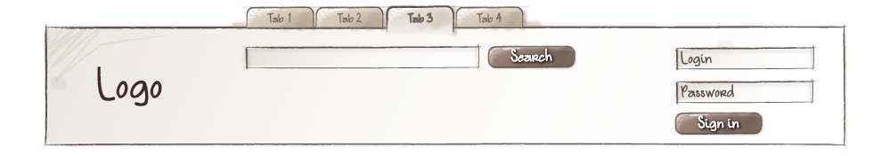
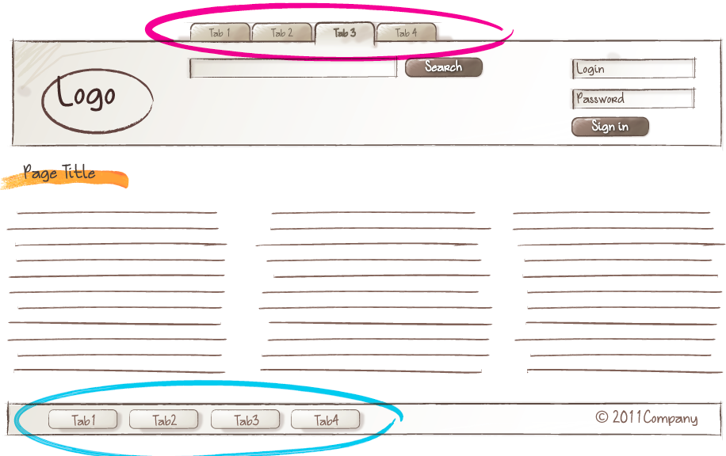

CSS 방법론, BEM에 대하여
BEM 소개
2019 프론트앤드 개발 로드맵을 보면 CSS 아키텍쳐로 BEM을 추천하고 있다(여기서 추천하는 기술은 많이 쓰이는 기술들이라, 전체적으로 한 번 공부해보는 것이 좋을 것 같다).

2017년에는 추천하는 기술에 포함되지 않았던 BEM은 2018년에 들어 추천하는 기술에 올랐고, 2019년에는 여전히 추천하는 기술에 포함돼있지만 CSS in JS의 등장으로 금방 자리를 내어줄 것 같다.
CSS in JS는 React같은 Front-End Framework에 최적화되어 있다.
프레임워크의 사용이 주를 이루는 요즘, 금방 BEM이 대체되지 않을까라는 생각이 들었다.
CSS의 변천사에 관해서는 이 글을 한번 읽어보면 좋을 것 같다.
하지만 위의 사진에도 적혀 있듯이 이런 방법론이 있다는 것에 의미를 두고 간단히 정리해보려 한다.
빌어먹을 CSS
처음 CSS로 프로젝트를 진행할 때, 가장 어려웠던 점은 flex도 position도 아닌 id와 class의 작명이었다. 프로젝트를 하다 보면 한두 개였던 요소가 어느새 한눈에 담기지 않게 되고 내가 썼던 클래스 이름을 잊기 부지기수였다.
인터넷에서 어떤 규칙을 갖고 작성하는 게 좋다는 가이드라인을 찾는 것조차, 개발 공부 초짜였던 나에게는 너무나 어려운 일이었다. 그렇다고 주먹구구식으로 개발하기에는 항상 같은 문제에 부딪혔고, 조금만 규모가 커질 때마다 곤란해 하다가 모든 것을 놓아버리는 방치형 개발을 주로 하였다.

나중에 CSS 방법론에 대해 알게 되었고, 그 중 BEM을 추천한다는 것까지 알게 되었다. 그 생각까지가 BEM에 대한 마지막 기억이다.
CSS 방법론
CSS 방법론(CSS Methodology)은 모듈화, 재사용 가능성과 확장 가능성 등을 고려하여 CSS를 잘 작성하기 위한 지침이다. 쉽게 말해, 개발자가 코드를 잘 작성하고 유지∙보수하기 쉽게 만들기 위한 CSS 작성 규칙이다. 프레임워크나 라이브러리 같은 것이 아니다.
CSS 방법론에는 OOCSS, BEM SMACSS등이 있는데, 이번 포스팅에서는 그중 가장 많이 쓰이는 BEM에 대해서만 다루려 한다.
BEM 이란?
BEM은 Block__Element_Modifier의 약자로, 웹 UI를 블럭 단위로 컴포넌트화하여 개발하는 개발 방식이다.
컴포넌트(Component)란? 독립적이고 완결된 뷰를 생성하기 위하여 HTML, CSS, 자바스크립트를 하나의 단위로 묶는 것을 의미한다. 쉽게 말해, 웹을 구성하는 동작 가능한 하나의 부품이다.

컴포넌트화하여 개발하면, 아래 그림과 같이 배치를 바꿔야 하는 상황에서 많은 코드 변화 없이 유동적인 배치가 가능해진다.


또한, 코드를 재사용하는 데 있어 큰 장점을 가진다.

먼저, BEM은 class작명 규칙을 기본으로 한다. BEM에 따라 class를 작명할 때, 이름만 봐도 어떤 기능을 하는지 알 수 있도록 이름을 명확하게 짓는다. 작명 규칙 뿐만 아니라 파일 구조에 관한 규칙 또한 존재한다. 이러한 규칙들을 통해 개발 및 유지∙보수가 쉬운 코드를 작성하는 것을 목표로 한다.
BEM의 핵심 개념은 다음과 같다.
- Block
- Element
- Modifier
- File structure
BEM 핵심 개념
1. 블럭(Block)
블럭(Block)은 재사용 가능하고 기능적으로 독립된 페이지 구성 요소를 의미한다. 여기서 블럭은 상태가 아닌, 목적(or 의미)을 기반으로 작명한다.
<!-- O 올바른 방법, 의미를 담고 있어야 함 -->
<div class="error"></div>
<!-- X 잘못된 방법, 형태를 묘사하고 있음-->
<div class="red-text"></div>
불록과 관련하여 지켜야 하는 규칙은 다음과 같다.
- 블럭은 환경에 영향을 주지 않는다.
margin같은 외부 여백을 주지 않는다.- 위치를 설정하면 안 된다.
- 태그,
id선택자를 사용하면 안된다.
블럭은 각 컴포넌트를 담는 그릇과 같다. 이렇게 외부에 영향을 주지 않는 규칙이 있는 이유는, 재사용성과 확장성을 고려하기 때문이다. 만약 여백이나 위치와 관련된 스타일이 적용되어 있다면 해당 블럭을 다른 곳에 이식하여 사용하려 할 때, 다시 여백이나 위치를 설정해야 하는 등의 귀찮은 일이 발생할 수 있다.

추가로, 블럭을 사용할 때는 중첩해서 사용할 수 있다. 블럭 안에 블럭이 있다고 해서 이상하게 생각할 필요가 없다. 필요에 따라 중첩하여 사용할 수 있다.
<!-- header block -->
<header class="header">
<!-- 중첩된 logo block -->
<div class="logo"></div>
<!-- 중첩된 search-form block -->
<form class="search-form"></form>
</header>
2. 요소(Element)
요소(Element)는 단독으로 사용할 수 없는, 블럭의 부분적인 구성요소다. 요소 역시 블럭과 동일하게 목적(or 의미)을 기반으로 작명한다. 이름을 구성할 때 반드시 블럭 이름과 함께 적어준다. ex) 블럭이름__요소이름

만약, search-form블럭이 있고, 그 내부에는 input과 button요소가 있는 경우에는 다음과 같이 작성한다.
<!-- search-form block -->
<form class="search-form">
<!-- search-form block 안에 있는 input element -->
<input class="search-form__input">
<!-- search-form block 안에 있는 button element -->
<button class="search-form__button">Search</button>
</form>
블럭과 동일하게 중첩해서 사용할 수 있지만 주의할 점이 있다. 요소는 항상 요소의 일부가 아닌, 블럭의 일부여야 한다. 이 규칙에 따라 block__element1__element2과 같은 이름은 절대 나올 수 없다.
<!-- O 올바른 방법, search-form__content__input 같은 작명은 불가능하다.-->
<form class="search-form">
<div class="search-form__content">
<input class="search-form__input">
<button class="search-form__button">Search</button>
</div>
</form>
<!-- X 잘못된 방법, 위의 올바른 방법대로 작성하기를 권장한다.-->
<form class="search-form">
<div class="search-form__content">
<input class="search-form__content__input">
<button class="search-form__content__button">Search</button>
</div>
</form>
또한, 요소는 블럭에 의존적인 이름을 가진다. 다음과 같이 중첩된 구조가 있고, BEM에 따라 작명하였다.
<div class="block">
<div class="block__elem1">
<div class="block__elem2">
<div class="block__elem3"></div>
</div>
</div>
</div>
CSS에서 스타일을 작성할 때 다음과 같이 셀렉터를 사용할 것이다. block 아래에 어떤 요소들이 담겼는지 한 눈에 보여서 좋다.
.block {}
.block__elem1 {}
.block__elem2 {}
.block__elem3 {}
만약 DOM 구조가 다음과 같이 변경되더라도 큰 타격이 없다. 변경해야 할 사항이 적다는 것을 의미한다.
<div class="block">
<div class="block__elem1">
<div class="block__elem2"></div>
</div>
<div class="block__elem3"></div>
</div>
하지만, 만약 다음과 같이 요소의 일부로 작성한 상태에서 DOM구조가 바뀌면 HTML과 CSS 모두 변경해야 한다. 굉장히 비효율적이다.
<!-- DOM 구조 변경 전 -->
<div class="block">
<div class="block__elem1"></div>
<div class="block__elem2"></div>
<div class="block__elem3"></div>
</div>
<!-- DOM 구조 변경 후 -->
<div class="block">
<div class="block__elem1">
<!-- 바뀐 이름을 CSS에서도 변경해줘야 한다... -->
<div class="block__elem1__elem2"></div>
</div>
<div class="block__elem3"></div>
</div>
3. 수식어(Modifier)
수식어(Modifier)는 블럭이나 요소의 모양(ex. size_s, theme_islands), 상태(ex. disabled, focused) 그리고 행동(ex. derections_left-top)을 정의한다. 기본적으로 블럭이름_수식어이름, 블럭이름__요소이름_수식어이름 의 형태로 작성한다.
기억하기로는, 이전에 BEM방법론에서 Modifier는 _(언더바 한 개)가 아닌 –(하이픈 두 개)를 썼던 것으로 기억한다. 대다수 자료들이 이를 기반으로 만들어졌다.
기왕이면 바뀌기 전∙후 모두를 아는 것이 좋을 것 같다.둘 다 가능하다. 사용자 편의에 따라 규칙을 정하고 사용하면 된다.

Modifier를 통해 앞의 블럭과 요소가 묘사하지 않았던 모양, 상태, 행동을 나타낼 수 있다. 간단한 예시를 통해 살펴 보자. search-form블럭의 button요소는 다음과 같은 스타일을 갖는다. 버튼이 공통적으로 가질 스타일을 정의하고 있다.
.search-form__button{
background-color: red;
color: white;
}
이 상황에서 비슷한 형태지만 조금 다른 모양을 가진 버튼을 만들어 주려한다. 이때, 우리는 수식어를 통해 다른 크기를 가진 버튼 스타일을 지정할 수 있다. size_s와 size_l을 만들어 버튼의 크기를 지정한다.
.search-form__button_size_s{
width: 80px;
height: 18px;
}
.search-form__button_size_l{
width: 240px;
height: 24px;
}
공통적인 속성에다가 사이즈만 정의하여 다양한 버튼을 쉽게 만들 수 있다.
이러한 수식어의 타입은 크게 Boolean과 Key-value로 나눌 수 있다.
먼저, Boolean의 경우 주로 true, false를 값으로 가질 때, 혹은 값을 특정할 수 없을 때 쓴다. focused를 예로 들면, 포커스 되었는지 아닌지가 중요할 때 쓴다.
기본적으로 값을 true라고 생각하면 된다. focused를 Modifier로 썼다면 실제로는 focused_true라고 쓰여있다고 생각하면 이해하기 쉽다.
보통은 다음과 같은 형태로 쓴다.
블럭이름_수식어이름블럭이름__요소이름_수식어이름
<!-- search-form 블럭은 focused Boolean 수식어를 가지고 있음 -->
<form class="search-form search-form_focused">
<input class="search-form__input">
<!-- search-form 블럭은 disabled Boolean 수식어를 가지고 있음 -->
<button class="search-form__button search-form__button_disabled">Search</button>
</form>
다음으로, Key-value의 경우 수식어의 값이 중요할 때 쓴다. 예로, 사이즈가 작은 버튼의 경우 수식어를 button_size_s이라고 작명한다.
보통은 다음과 같은 형태로 쓴다.
블럭이름_수식어이름_값블럭이름__요소이름_수식어이름_값
<!-- search-form의 theme 값이 islands인 경우 -->
<form class="search-form search-form_theme_islands">
<input class="search-form__input">
<!-- button요소의 size 값이 m인 경우 -->
<button class="search-form__button search-form__button_size_m">Search</button>
</form>
<!-- 수식어 이름은 같지만 다른 값을 가진 클래스 명을 같이 써서는 안 된다 -->
<form class="search-form
search-form_theme_islands
search-form_theme_lite">
<input class="search-form__input">
<button class="search-form__button
search-form__button_size_s
search-form__button_size_m">
Search
</button>
</form>
4. 혼합(Mix)
이렇게 블럭과 요소를 나눠서 확실히 쓰다 보면 가끔 블럭과 요소의 경계가 모호할 때가 있다. 이때, 블럭과 요소를 섞어서 쓸 수 있는지 의문이 드는데, 결론부터 말하자면 가능하다.
아래의 예시를 보면 현재 header 블럭 내부의 search-form은 자체적으로 블럭이면서 heder 블럭의 요소이다.
<!-- header block -->
<div class="header">
<!--
search-form block이면서, header block의 search-form element인 경우
-->
<div class="search-form header__search-form"></div>
</div>
이런 경우, 클래스명을 둘 다 써주어 각각의 독립적인 규칙을 지킬 수 있게 된다. 앞에서 말했듯이 블럭에는 여백이나 위치 같은 외부 환경에 영향을 주지 않아야 한다. 하지만 여기서는 요소로도 쓰이기 때문에 불가피하게 여백이나 위치를 지정해주어야 한다. 이때, 두 클래스명을 예시와 같이 분리해주면 규칙을 위반하지 않게 코드를 작성할 수 있다.
5. 파일 구조(File Structure)
마지막으로, 이러한 작명법은 class명 뿐만 아니라 파일 작명에도 적용할 수 있다. 이를 통해 파일 구조를 명확하게 할 수 있다.
search-form/ # Directory of the search-form
__input/ # Subdirectory of the search-form__input
search-form__input.css # CSS implementation of the
# search-form__input element
search-form__input.js # JavaScript implementation of the
# search-form__input element
__button/ # Subdirectory of the search-form__button
# element
search-form__button.css
search-form__button.js
_theme/ # Subdirectory of the search-form_theme
# modifier
search-form_theme_islands.css # CSS implementation of the search-form block
# that has the theme modifier with the value
# islands
search-form_theme_lite.css # CSS implementation of the search-form block
# that has the theme modifier with the value
# lite
search-form.css # CSS implementation of the search-form block
search-form.js # JavaScript implementation of the
# search-form block
정리해보면
예시 하나 더
BEM의 공식 문서를 읽으며 이해하는 데 큰 문제가 없었으나, 뭔가 크게 와닿지 않는다. 그러면 “BEM I (finally) understand”, Andrei Popa라는 글을 읽어보면 모호한 개념들이 단번에 이해된다. 정리겸 마지막 정리 예시를 한 번 가져와 보았다.

이 사진에 있는 풍경을 코드로 바꿔보면 다음과 같다. 먼저 풍경(scenery)을 블럭으로 만들어주고 그 내부에 구성 요소인 sky, ground, people을 요소로 추가한다.
<body class="scenery">
<section class="scenery__sky"></section>
<section class="scenery__ground"></section>
<section class="scenery__people"></section>
</body>
그리고 하늘 요소에는 sky 블럭을 하나 더 추가하고, 그 구성 요소로 clouds와 sun을 추가한다.
<body class="scenery">
<section class="scenery__sky">
<div class="sky">
<div class="sky__clouds"></div>
<div class="sky__sun"></div>
</div>
</section>
<section class="scenery__ground"></section>
<section class="scenery__people"></section>
</body>
여기서 다음과 같이 scenery__sky와 sky는 혼합하여 사용할 수 있다. 경우에 따라 둘 중 원하는 방식으로 코드를 작성하면 된다.
<body class="scenery">
<section class="scenery__sky sky">
<div class="sky__clouds"></div>
<div class="sky__sun"></div>
</section>
<section class="scenery__ground"></section>
<section class="scenery__people"></section>
</body>
마지막으로 낮 시간대의 하늘에 다른 속성을 주기 위해, sky의 수식어로daytime을 추가한다.
<body class="scenery">
<section class="scenery__sky">
<div class="sky sky_daytime">
<div class="sky__clouds"></div>
<div class="sky__sun"></div>
</div>
</section>
<section class="scenery__ground"></section>
<section class="scenery__people"></section>
</body>
블럭과 요소 그리고 수정자는 다음과 같이 정리할 수 있다.
- 블럭(Block)은 요소에 대한 컨테이너이며 최소한의 스타일을 적용한다.
- 요소(Element)는 블럭 내부를 구성하는 구성 요소다. 본격적인
- 수정자(Modifiers)는 블록이나 요소의 기본 속성에 약간의 변화를 추가한다.
BEM의 기본적인 개념에 관한 내용은 그리 어렵지 않다. 하지만 이를 직접 프로젝트에 적용하면 꽤 어렵다. 대체 어디까지가 블럭이지? 요소와 블럭을 섞어서 써도 된다 했는데 그냥 블럭 안에 요소로 둘까? 등 모호한 부분이 많아 난처했다. 이에 대한 답은 공식 도큐먼트에 자세한 예시와 함께 쓰여있다. 이런 상황별 예제를 통해 BEM을 익히면 많은 도움이 될 것 같다.
내가 느낀 BEM
BEM방식은 굉장히 유용하다. 스포츠 경기의 국제 룰처럼, CSS 개발에서 하나의 정해진 명명 규칙(Naming Convention)이 있다는 것은 혼란으로 가득찬 CSS 개발에 다양한 이점으로 작용한다.
먼저, 내가 내 코드를 다시 읽었을 때 혹은 남이 내 코드를 읽었을 때 코드와 그 의도를 이해하기 쉬워진다. 또한 컴포넌트화, 깔끔한 코드 그리고 누구나 수긍할 수 있는 명명 규칙은 협업하는데에도 많은 도움이 된다. 마지막으로, 구성된 디자인을 코드로 구현할 때 가이드라인과 같이 작용하여 어떻게 구성할지 헤매지 않도록 도움을 준다.
다만, BEM방식은 class 이름이 길어지는 치명적인 단점이 있지만, BEM의 이점과 BEM을 통해 배울 수 있는 개발 방식은 앞으로의 개발에 많은 도움이 될 것 같다.
Reference